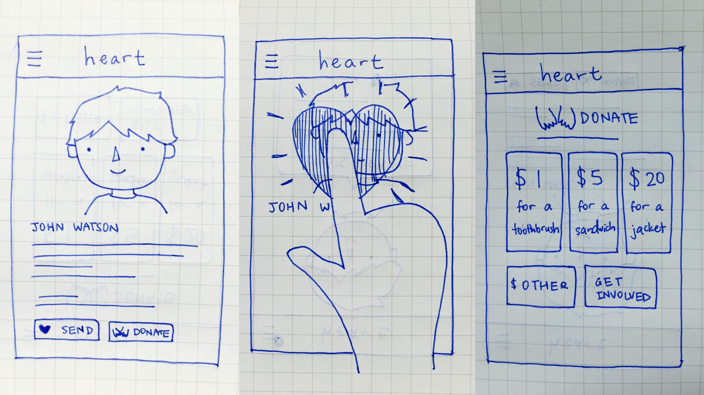
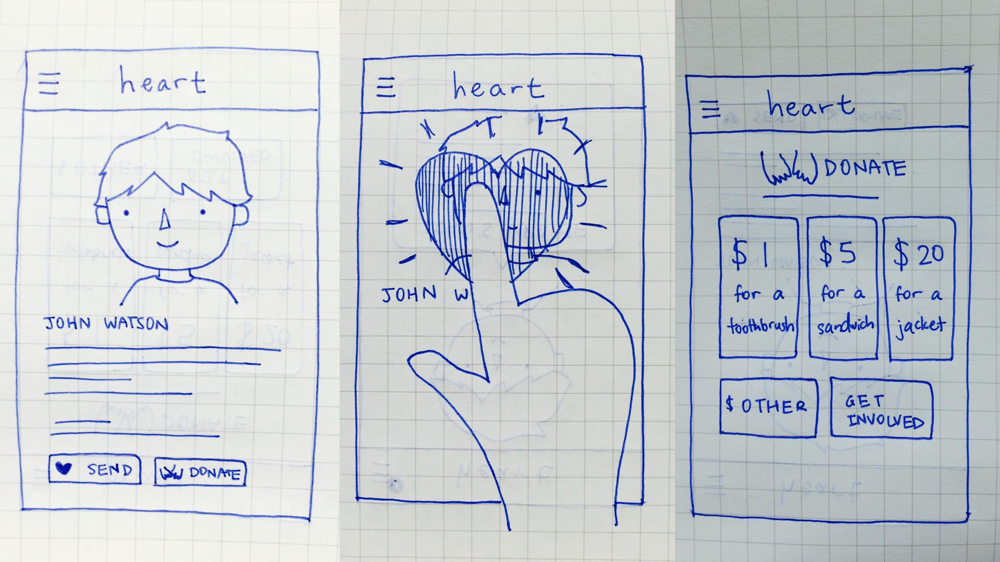

Heart
Summer 2015 · San Francisco, CA
Overview
Heart is multi-platform concept aimed at generating more compassion and empathy for the homeless. It was created at the Andreesen Horowitz + IDEO Designathon, and our team was awarded first place for the idea.
Role
Contributed with brainstorming and ideation, and some brand development. Led team in developing presentation.
Timeline
3 hours
Teammates
Viraj Bindra, Katherine Liu, Janhavi Vartak
Categories
Design thinking, Brainstorming, Ideation, Storytelling
Challenge
Designing for the Homeless
Homelessness is a persistent problem in many cities, and especially so in San Francisco, where the homeless population is estimated to be 7,000-10,000 people. We heard from staff at GLIDE, a homeless shelter operating in the Tenderloin that offers various services to the local community, including legal services, temporary housing, and free meals to the homeless.
We heard their firsthand experiences in working with the homeless, as well as stories of people who were formerly homeless and now adjusted back into society. Soon after, we were tasked to create digital tools that could help alleviate some of the symptoms and causes of homelessness in our city.
Approach
Brainstorming
Once let loose to brainstorm and prepare our ideas, we first distilled our learnings from the experiences shared, compiling insights across our team. One of the major things that stuck out to us was the need for positive, rather than negative reinforcement: in hearing from the staff member that was formerly homeless, she shared that homeless people can only really begin to pick themselves back up again when they learn to love and care for themselves.
Coupled with our own experiences encountering the homeless, we also wanted to focus on enabling passerby that notice a homeless man or woman on the street a way of interacting and perhaps helping, in a way that didn't feel inconvenient or less safe. Inspired by RFID tags and beacons recently featured in the news, we continued to ideate, picking and choosing the best concepts and suggestions to synthesize into a solution.

Getting a lot of ideas out quickly was key.
Solution
A Two-Way Platform
Our solution ended up being twofold, with components for both passerby on the street and the homeless themselves. For passerby, we created a mobile app that allowed you to interact with and keep track of homeless people you might've encountered on the way to work or in between errands, and send them support in the form of hearts or donated money. While being able to donate in a more conveneient and safer way without having to pull out your wallet was one thing, we were more concerned with making people's stories accessible—if you were able to hear how someone was displaced or ended up in this unfortunate situation, you might have more empathy and willingness to help out.
 

For the homeless, who rarely have access to smartphones, we focused instead on a debit card, with a chip to interact with the phones of passerby. For one, that chip meant that passerby could see your profile and story in their mobile app, and also allowed you to login via online web app at a shelter to engage with and post updates to people that have supported and followed you. Additionally, the debit card would load up with your donations, and would be usable at any local business that partnered with the GLIDE organization.


The team smiles after our presentation!